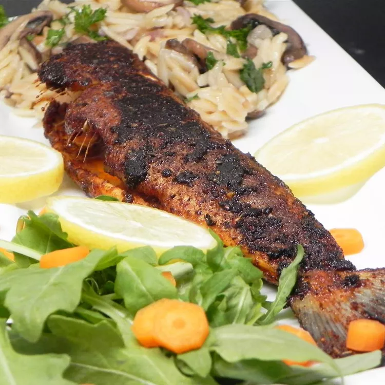

Spiced-up Recipes
Here you will find my favorite recipes that I have been perfectioning for amazing flavor and spicenness
Check them out!
Blackenned Fish Sandwich

AWhite-fleshed fish is coated in a paprika-based spice rub and grilled until dark and juicy, then stuffed in soft and tender bread with classic condiments.
- Ingredients
-
- Bacon
- Grouper
- Blackening seasoning
- Lettuce
- Tomato
- Mayonnaise and siracha
- Brioche buns
- Steps
-
- Stir together paprika, oregano, thyme, onion powder, garlic powder, black pepper, and cayenne. Season fish fillets all over with salt, then rub each all over with spice rub.
- Cook fish on hot side of grill until undersides of fillets are darkened and a thin slotted fish spatula can be slid under with little resistance, about 4 minutes. Flip fish and repeat on other side.
- Toast buns on hot side of grill, then build sandwiches. Spread mayo (or tartar sauce or remoulade) on bottom and top buns; set fish fillets on bottom buns; top with lettuce and tomato (and bacon, if using); and close sandwiches.
Go back for more recipes